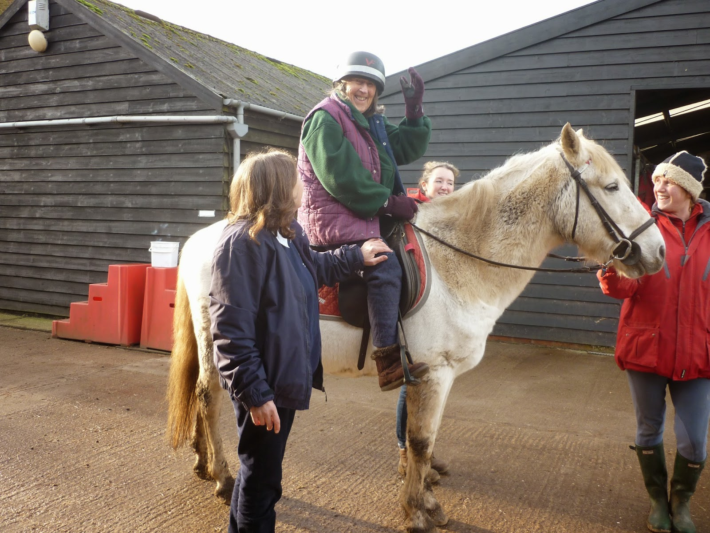
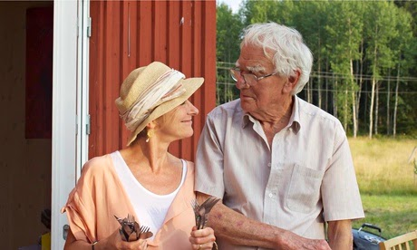

 |
| "Pet Therapy" - as approved by Dr Moreira |
{kind=link}
Pinned to my mother's sitting room wall
is a small and slightly worn piece of paper. It's headed Dr Moreira's
Good Advice.
Dr Moreira's title is Speciality Doctor
Later Life Care Community Psychiatry and I hope she realises how invaluable she has been in
helping my mother (and me) through periods of particular distress. My
mother has both Alzheimer's and vascular dementia and there have been
moments when I have feared that medication might be necessary. Dr
Moreira asked us questions, listened to the answers and offered preliminary advice. This was the list I jotted down later:
Drink water frequently
Eat as healthily as you
can
Take exercise but don't
get over-tired
Avoid disorientation
Have some fun
Don't get ill
I remember thinking that the last one
must be some sort of doctorly joke. Illness is something that just
happens: you get it cured and carry on. People with dementia,
however, are so sensitive that the slightest ailment or infection which the rest of us take in our stride can have a disproportionate
impact on their mental as well as their physical health.
I began to realise how devastating
illness might be for a person with dementia when I read Sally
Magnusson's account of her mother's experience when she was admitted
to hospital with a broken hip. After waiting all day (NIL BY MOUTH)
for an operation that didn't happen, Magnusson's mother, Mamie Baird,
was becoming more and more agitated. Her daughter asked to remain
with her as night approached. She was refused. Magnusson's book Where Memories Go
expresses her anguish:
“We feel helpless. Leaving you to
face the night alone in this strange noisy place, frightened and
achingly vulnerable, is like abandoning a scared child. No parent
would do it. No parent would be expected to. Can anyone tell us the
difference?”
Mamie Baird had an attack of delirium
after her daughters left. “You have been shouting and raving all
night, trying to pull the hydration drip from your wrist and haul out
your catheter Overnight, wrestling with those invasive tubes and in
terror of the touch of strangers you had plummeted to new depths. We
thought your mind had gone for ever. Some people never recover.”
I was in a surgical ward myself three
years ago. The sound of abandoned, uncomforted dementia patients
still haunts me. Anyone who has been in a general hospital ward will
have witnessed similar scenes. This issue concerns us all, sick or
well.
Over a quarter of hospital beds are
currently occupied by people with dementia. They stay many weeks
longer than other people of the same age admitted with the same
medical conditions; 48% of them leave hospital less physically well
than when they were admitted and 54% have deteriorated mentally. Far
too many people with dementia in hospital will have been treated with
anti-psychotic drugs in an attempt to muffle their distress and 36%
of those who have been living in their own homes before admission to
hospital will never be able to return.
These findings are from an Alzheimer's
Society report, Counting the Cost: Caring for people with dementia on hospital wards. It was published in 2009 and it would be
reassuring to think that all the highlighted issues had been successfully addressed. But they haven't.
In February this year my friend Nicci
Gerrard's father John, a former doctor, was admitted to hospital to
have leg ulcers treated. John Gerrard had been diagnosed with
Alzheimer's in his mid 70s but was still managing to live a good, if
limited, life in his own home, assisted by carers and his loving
family. The hospital admission was catastrophic. He was there for
five weeks and was almost entirely denied visitors as there was a
norovirus outbreak. “For as long as I live,” writes Nicci Gerrard, “I will regret that we didn't understand sooner what this
prolonged stay might mean.”
 |
| Nicci and her father on holiday last year |
{kind=link}
“Five
weeks. He went in strong, mobile, healthy, continent, reasonably
articulate, cheerful and able to lead a fulfilled daily life with my
mother. He came out skeletal, incontinent, immobile, incoherent,
bewildered, quite lost.” John Gerrard required 24 hour care for the
rest of his life and died in November 2014.
This
may seem some way removed from my mother's sitting room and Dr
Moreira's Good Advice. John Gerrard blew it: he got ill. Maybe he'd
have died anyway.
But
look at the first items on that list: hydration and nutrition. People
with dementia need to drink and eat. Simple as it sounds it's one of
the things they can forget. Recommendation 8 of the Alzheimer's
Society report is “Make sure people with dementia have enough to
eat and drink.” This was written in 2009, three years after a 2006
report by Age Concern entitled Hungry to be Heard: the scandal of malnourished older people in hospital.
Yet in 2014 John Gerrard comes out of hospital “skeletal”. This
is our country in the 21st century. Okay, there was norovirus. But did John Gerard have to
starve? It wouldn't have happened had his family been there.
I
support the NHS workers, I'll sign petitions on their behalf and
acknowledge all the good work that they do but how can it be
acceptable that 68% of carer respondents in the Alzheimer's Society
survey stated that their relative had not been helped to eat or drink
sufficiently while in hospital? This is failure at a most basic
level.
So
what do we do? Reports have been written, initiatives are in place,
political parties are girding up to make hospitals and the NHS their
'big story' at the next election but, as the daughter of a
90-year-old who is doing her best to abide by the good advice she has
received but cannot guarantee never to get ill, I am not prepared to
wait any longer while the professionals try to get their act
together.
I
hope that they will succeed. I support every step they are taking
but I would like to point out that while I don't know about broken
hips or leg ulcers, I am the specialist in my mother's
“person-centred care” (a key recommendation of the 2009 report).
I can usually understand what she is saying, I can offer her a drink,
help her to the lavatory, talk to her and hold her hand. My mother
often thinks that I am her
mother: she trusts me as my children trusted me when I accompanied
them into hospital and stayed with them day and night until I was
able to take them home again.
My
family and I and mum's friends and carers have spent a long time
following Dr Moreira's Good Advice and trying our best to construct a
framework of support that helps mum to live reasonably contentedly
most of the time. And, although it's far from perfect, why should we
let a hospital admission kick it all down and leave us to pick up the
pieces afterwards?
Nicci
Gerrard writes, “My father looked after people all his life. He
was a good man who believed in the goodness of others. He was a man
of dignity and integrity and optimism. Yet – with the best of
intentions – we had to abandon him to a system that could not care
for him in the way that he required. At his hour of need, we didn’t
rescue him; we let him go. It needn’t be like that; it mustn’t.”
Together
we have set up John's Campaign with the single aim: the right to stay
with people with dementia in hospital. There are currently 800,000
people with dementia in the UK. Please support us and make it a campaign for everyone. If you have opinions to offer or your own experience to share you can contact us directly on Facebook or Twitter (@JohnCampaign) as well by post or via the website.
 |
| A letter of support |
(A version of this article has been published on the Open Democracy website)